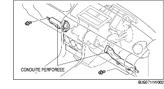

DEPOSE/REPOSE D'UNITE DE CLIMATISATION
B3E071161130W01
1. Débrancher le câble négatif de la batterie.
2. Décharger le réfrigérant. (voir la section CHARGEMENT DE REFRIGERANT.)
3. Vidanger le liquide de refroidissement moteur. (voir la section REMPLACEMENT DE LIQUIDE DE REFROIDISSEMENT MOTEUR.)
4. Débrancher l'unité de climatisation selon l'ordre indiqué dans le tableau.
-
Attention
-
• Si de l'humidité ou un corps étranger pénètre dans le cycle de liquide frigorigène, l'efficacité de la réfrigération sera moindre, et cela risque de provoquer des bruits anormaux ou d'autres dysfonctionnements. Toujours boucher immédiatement les raccords ouverts après la dépose de toute pièce se rapportant au cycle de réfrigération.
|
1
|
Flexible de refroidisseur (LO)
|
|
2
|
Tuyau de refroidisseur
|
|
3
|
Flexible de chauffage
|
5. Déposer les pièces suivantes :
-
(1) Portières avant (voir la section DEPOSE/REPOSE DE PORTIERE AVANT.)
-
(2) Panneau de cendrier (voir la section DEPOSE/REPOSE DE CONSOLE.)
-
(3) Console (voir la section DEPOSE/REPOSE DE CONSOLE.)
-
(4) Composant de levier de changement de vitesse (MTX) (voir la section DEPOSE/REPOSE DE MECANISME DE CHANGEMENT DE VITESSE.)
-
(5) Composant de levier de sélecteur (MTX) (voir la section DEPOSE/REPOSE DE COMPOSANT DE LEVIER DE SELECTEUR.)
-
(6) Panneau de décoration (voir la section DÉPOSE/REPOSE DE PANNEAU DE DÉCORATION.)
-
(7) Bas de portière avant (voir la section DÉPOSE/REPOSE DE BAS DE PORTIÈRE AVANT.)
-
(8) Garniture latérale avant (voir la section DÉPOSE/REPOSE DE GARNITURE LATÉRALE AVANT.)
-
(9) Boîte à gants (voir la section DÉPOSE/REPOSE DE BOÎTE À GANTS.)
-
(10) Conduites perforées (gauche, droite)

-
(11) PJB (voir la section DEPOSE/REPOSE DE BOITE DE RACCORDEMENT COTE PASSAGER (PJB).)
-
(12) Panneau inférieur (voir la section DEPOSE/REPOSE DE PANNEAU INFERIEUR.)
-
(13) Cache de colonne (voir la section DÉPOSE/REPOSE DE CACHE DE COLONNE.)
-
(14) Arbre de direction (voir la section DEPOSE/REPOSE DE VOLANT ET DE COLONNE DE DIRECTION.)
-
(15) Garniture de montant A (voir la section DÉPOSE/REPOSE DE GARNITURE DE MONTANT A.)
-
(16) Module de panneau central (voir la section DEPOSE/REPOSE DE MODULE DE PANNEAU CENTRAL.)
-
(17) Bras et balai d'essuie-glace (voir la section DEPOSE/REPOSE DE BRAS ET DE BALAI D'ESSUIE-GLACE AVANT.)
-
(18) Grille d'auvent (voir la section DÉPOSE/REPOSE DE GRILLE D'AUVENT.)
-
(19) Panneau d'auvent (voir la section DÉPOSE/REPOSE DE PANNEAU D'AUVENT.)
-
(20) Moteur de lève-vitre électrique (voir la section DEPOSE/REPOSE DE MOTEUR D'ESSUIE-GLACE AVANT.)
6. Déposer l'écrou de fixation de l'unité de climatisation du compartiment moteur, puis l'unité de climatisation.
-
Attention
-
• Si de l'humidité ou un corps étranger pénètre dans le cycle de liquide frigorigène, l'efficacité de la réfrigération sera moindre, et cela risque de provoquer des bruits anormaux ou d'autres dysfonctionnements. Toujours boucher immédiatement les raccords ouverts après la dépose de toute pièce se rapportant au cycle de réfrigération.
7. Déposer la conduite de chaleur arrière.
8. Débrancher le flexible de purge connecté à l'unité de climatisation.
9. Déposer les écrous et boulons qui servent à monter le tableau de bord sur la carrosserie.
10. Déposer le tableau de bord avec l'unité de climatisation. (voir la section DEPOSE/REPOSE DE TABLEAU DE BORD.)
11. Débrancher le câble de mélange d'air de la tringle de mélange d'air et du collier de câble. (climatisation manuelle)
12. Débrancher le câble de mode de débit d'air de la tringle principale de mode de débit d'air et du collier de câble. (climatisation manuelle)
13. Débrancher les connecteurs suivants :
-
- Connecteur de moteur de soufflerie
-
- Connecteur de MOS FET (transistor de puissance) (climatisation entièrement automatique)
-
- Connecteur de capteur de température d'évaporation
-
- Connecteur d'actionneur d'admission d'air
-
- Connecteur d'actionneur de mélange d'air (climatisation entièrement automatique)
-
- Connecteur d'actionneur de mode de débit d'air (climatisation entièrement automatique)
-
- Connecteur de résistance. (climatisation manuelle)
14. Déposer le carter de chauffage.
15. Déposer les écrous et boulons de fixation de l'unité de climatisation sur le tableau de bord.
Note sur la repose d'unité de climatisation
1. Lors du remplacement de l'unité de climatisation ou d'évaporation, faire l'appoint d'huile de compression dans le cycle de réfrigération.
-
Quantité d'huile supplémentaire (quantité approximative)
-
25 ml {25 cc, 0,8 fl oz}